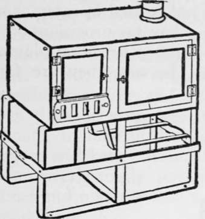
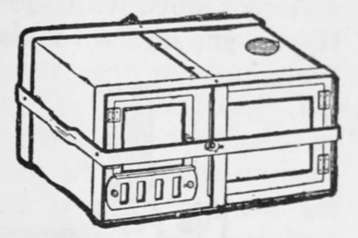
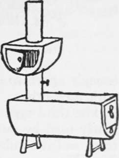
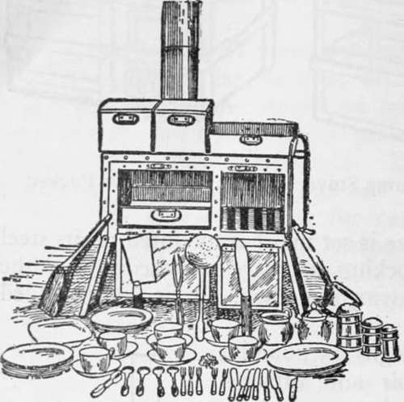
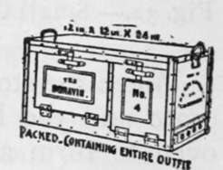

Camp Stoves
Description
This section is from the book "Camping And Woodcraft", by Horace Kephart. Also available from Amazon: Camping and Woodcraft.
Camp Stoves
If there is a separate commissary tent, the cooking can be done on a common blue-flame oil or gasolene stove, set up on a perfectly level stand. Such a stove is useless out of doors unless fitted with a wind-shield. Do no cooking in the living tent: it attracts flies and vermin.
The best cooking stoves for campers are those specially designed for the purpose, and burning wood. There are many patterns, of varying merit. Do not buy a folding stove for ordinary Camping: they are bothersome and flimsy.
I leave out of account stoves without ovens (I can see no good reason for a stove at all unless it has an oven). There are shown here three different types of sheet steel camp stoves, each good in its way.
The first one (Figs. 32, 33) is very compact, yet large enough to cook for four persons, or six in a pinch. When packed and locked in its metal crate, it measures 10 1/2x18x21 1/2 inches, and can be checked as baggage. Inside the fire-box (8 x 10 x 17 inches) are packed three sections of adjustable 4-inch pipe, and two automatic locking bars. Inside the oven (7 1/2 x 10 1/2 x 17 inches) there is stowed a 5-gallon water reservoir, and with it a set of sheet iron and tin cooking utensils and table service for six persons. When the stove is in use, the reservoir hooks on to the left side of the stove, next to the fire box, and increases the stove top to 17 x 28 inches.
This is a most useful addition, since plenty of hot water is needed for cooking and in washing up.
The fire box takes in 16-inch wood. The oven is large enough for a qx 15-inch bread pan and will roast a good-sized fowl.
Fig. 32. Small Camp Stove.
Fig. 33. Stove Packed.
When the stove is set up, it is mounted on its steel crate and the locking bars are attached under the oven to form a warming rack. It is not intended for tent heating.
This stove weighs 25 pounds, and the reservoir and utensils about 15 pounds more. To make the pots and pans nest in the oven, they are made square or rectangular. For fixed camps it is best to select your own utensils, and carry the larger ones in a separate box.
The second stove (Fig. 34) is made with fire box extending its entire length. It will take in a billet 28 inches long, which will keep a fire all night, and will be ready for cooking five minutes after the dampers are opened in the morning. When packed for transportation, the stove measures 30 x 14 x 12 inches, and weight 29 pounds (43 1/2 pounds complete with grub box and utensils). When set up, the 14 x 30-inch top is free for utensils; the oven, above it, takes a 10 x 14-inch pan for baking or roasting. Oven, legs, and pipe stow inside the body of the stove, leaving space for a 12 x 13 x 9 1/2-inch galvanized box that holds cooking utensils and is used in camp as a dish-pan or as a vermin-proof box for provisions.
Fig. 34. Stove for Large Wood.
A cook-stove with sheet-iron top needs no plates. If you get one with plates, be sure they are far enough apart so that the vessels do not interfere with each other.
Fig. 35. Field Range.
Fig. 36. Field Range (Packed).
The third type of stove (Figs. 35, 36) is one reg-uiarly used by our Geological Survey, Forestry Bureau, and is similar to the Army range, but smaller. The No. 4 size, to cook for 6 men, packs, with utensils, in a space 12x13x22 inches. The oven is 8 x 12 x 12 inches. The range weighs 52 pounds, the utensils 20 pounds, and a dining service for six persons, in enamel and white or plated metal, 13 pounds. For continuous field service this is a quite practical range.
Personally, I never use a camp stove, preferring to cook in the open.
As for a heating stove in a tent, my experience tallies with that of Dr. Breck: "Either it bak -you with a temperature of ninety degrees, or it takes the first opportunity to go out directly you do your eyes, and you awake trembling with cold, the thermometer registering somewhere 'round zero." Someone else has called the tent stove " a portable hell." But there are those who like it, for cold-weather Camping; and I admit that*if the tent is not less than 10x14, and the stove's fire-box is big enough to take in a thick billet two feet long, so that it will keep a smouldering all-night fire without your everlastingly pottering around it, there are limes and places where a stove in the tent may be a good thing.
If you do set up a stove, be sure to fix a spark-arrester over the top of the pipe. This need not be anything more costly than a piece of wire netting.
If the stove must be set rather close to the tent wall, take along a sheet of asbestos as a shield. One of the pads used for dining-tables will do very well. Such things can be bought at department stores, or of mail-order houses.
When starting a fire in an " air-tight," use little fuel at first, or you will smother the flame in its own smoke. If the stove has no legs, make a board frame like the sides of a low box, or a crib of notched logs, and fill in with gravel.
Continue to: